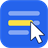

DragOn 사이트 관리
| 사이트 | 우클릭 · 복사 | 강력 모드 |
|---|
등록된 사이트가 없습니다. 위에서 추가하거나, 사이트에서 DragOn 아이콘을 눌러 켜세요.
변경 사항은 해당 사이트를 새로고침하면 적용됩니다.
설정 저장 위치
이 브라우저에 저장 (기본)
Edge에 로그인하고 확장 동기화를 켜 두면 같은 계정의 다른 PC와 공유됩니다. 외부 서버와 통신하지 않습니다.
서버(WebDAV) 동기화

| 사이트 | 우클릭 · 복사 | 강력 모드 |
|---|
등록된 사이트가 없습니다. 위에서 추가하거나, 사이트에서 DragOn 아이콘을 눌러 켜세요.
변경 사항은 해당 사이트를 새로고침하면 적용됩니다.
이 브라우저에 저장 (기본)
Edge에 로그인하고 확장 동기화를 켜 두면 같은 계정의 다른 PC와 공유됩니다. 외부 서버와 통신하지 않습니다.
서버(WebDAV) 동기화